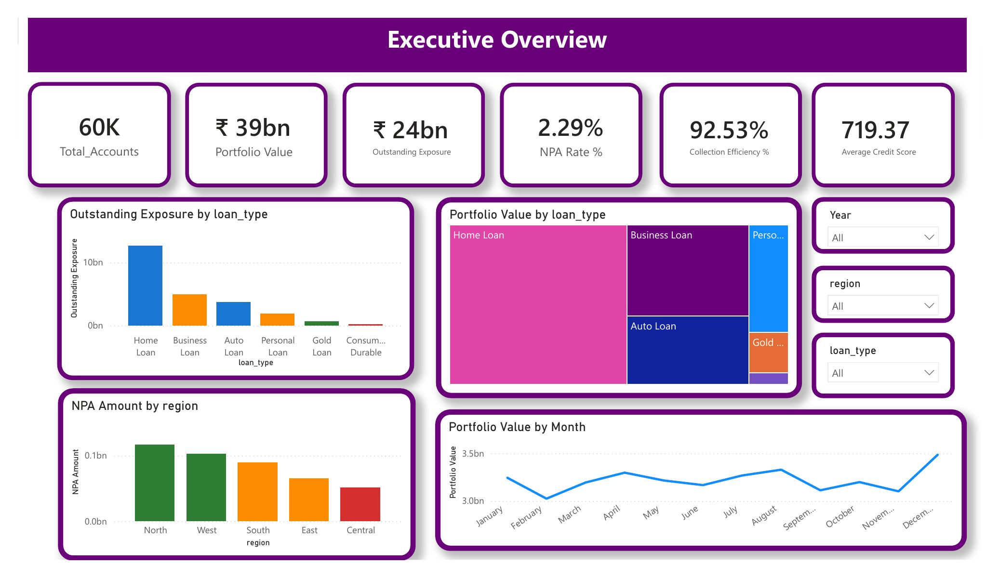
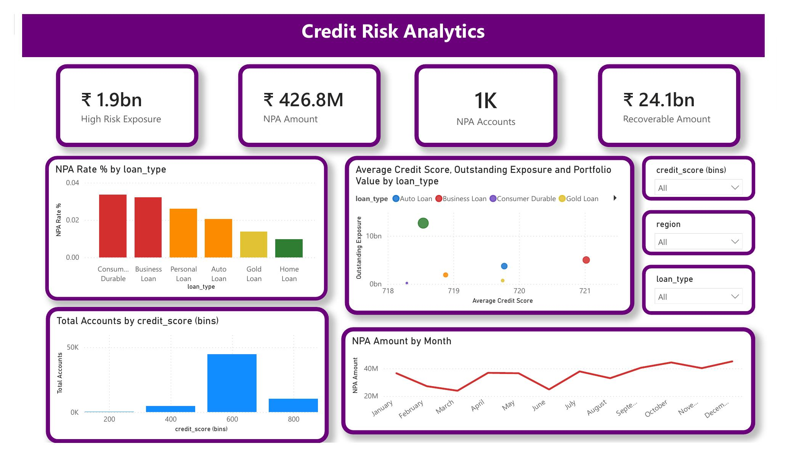
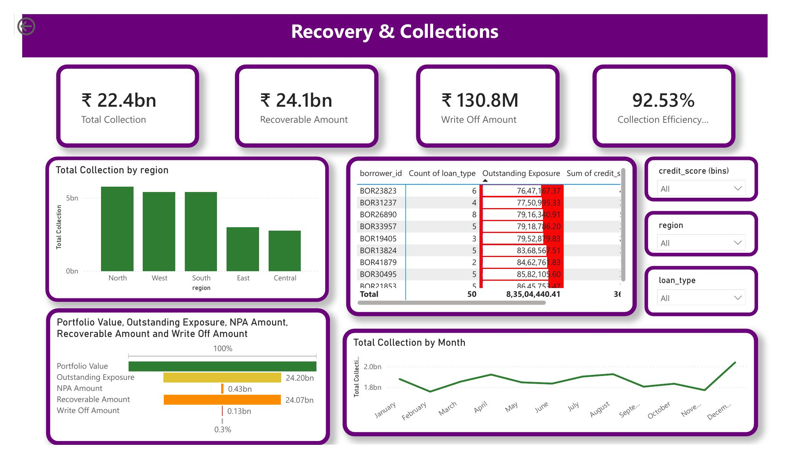

A 3-page Power BI report: Executive Overview, Credit Risk Diagnostics, and Recovery Performance & Collections, built on the 60,000-loan portfolio.



Total Disbursed (Cr) =
DIVIDE(SUM(loans[loan_amount]), 10000000)
Total Outstanding (Cr) =
DIVIDE(SUM(loans[outstanding_principal]), 10000000)
NPA Rate % =
DIVIDE(
CALCULATE(COUNTROWS(loans), loans[dpd_bucket] = "90+ DPD (NPA)"),
COUNTROWS(loans)
)
NPA Exposure (Cr) =
DIVIDE(
CALCULATE(SUM(loans[outstanding_principal]), loans[dpd_bucket] = "90+ DPD (NPA)"),
10000000
)
Collection Efficiency % =
DIVIDE(SUM(loans[collections_amount]), SUM(loans[outstanding_principal]))
Best Loan Type NPA Rate % =
CALCULATE(
MINX(
VALUES(loans[loan_type]),
CALCULATE([NPA Rate %])
),
ALL(loans[loan_type])
)
Avoidable NPA (Cr) =
VAR TypeRate = [NPA Rate %]
VAR BestRate = [Best Loan Type NPA Rate %]
VAR Gap = MAX(TypeRate - BestRate, 0)
RETURN
DIVIDE(Gap * SUM(loans[outstanding_principal]), 10000000)